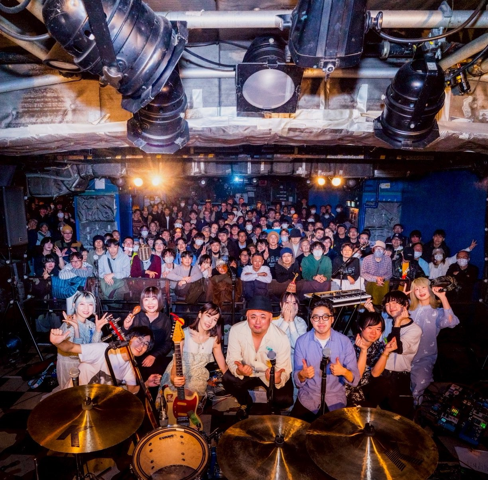

書くことから、
メディアを考える。
2024年4月からnoteで音楽の記事を書いています。最初は好きなアーティストや作品について書くことが中心でしたが、書いているうちに、音楽そのもの以外のことも気になるようになりました。
Webだけじゃなく紙でも何か作ってみたいと思い、ZINEも2冊作りました。アーティストへのインタビューをして、企画、取材、執筆、編集まで自分でやっています。
WRITING / MUSIC / MEDIA
noteで音楽について書いたり、ZINEを作ったりしています。最近は、音楽そのものだけじゃなくて、音楽と社会やメディアの関係にも興味があります。
SCROLL ↓
2024年4月からnoteで音楽の記事を書いています。最初は好きなアーティストや作品について書くことが中心でしたが、書いているうちに、音楽そのもの以外のことも気になるようになりました。
Webだけじゃなく紙でも何か作ってみたいと思い、ZINEも2冊作りました。アーティストへのインタビューをして、企画、取材、執筆、編集まで自分でやっています。
noteを書いていて、同じ内容でもタイトルや題材の出し方で読まれ方が変わることに気づきました。
たくさん読まれた一方で、文章の表現について批判的な意見ももらった記事です。自分の考えをどう書けばいいのか、改めて考えるきっかけになりました。
音楽の話だけではなく、自分の経験や考えていることを書いたエッセイです。
自分の文章や発信について考えるきっかけになった記事です。
noteで固定していて、今も読まれている記事です。自分の活動を知ってもらう入口にもなっています。
気になった記事があれば、カードからnoteで読めます。


Webだけじゃなく、実際に手に取れるものも作ってみたくて、ZINEを2冊作りました。音楽を作っているアーティストにインタビューをして、企画から執筆、編集まで自分でやりました。
完成したZINEは協力してくれたアーティストにも送りました。それをきっかけにライブに招待してもらうなど、作ったものを通して実際に人と関わる経験もできました。

ZINEをアーティストに送ったことがきっかけで、ライブに招待してもらいました。作ったものが実際の人とのつながりにつながったのが、自分にとって印象に残っている経験です。
音楽のジャンルは、誰が、どのように決めているのか？
SNSで「バズった曲」と「流行した曲」は、本当に同じなのか？
サブスク時代に、アルバムを一枚通して聴く意味は変わったのか？
音楽評論は、誰に向けて書かれるべきなのか？
こういうことを、大学でもっと考えてみたいと思っています。音楽文化の社会学やポピュラー音楽論、メディア分析などを学んで、今まで書いてきた文章にもつなげていきたいです。
NEXT
これからもnoteやZINEで文章を書いたり、何かを作ったりしていきます。
Webサイト制作の一部にAIを使用しています。
写真提供：plasticpoolside、Moon In June